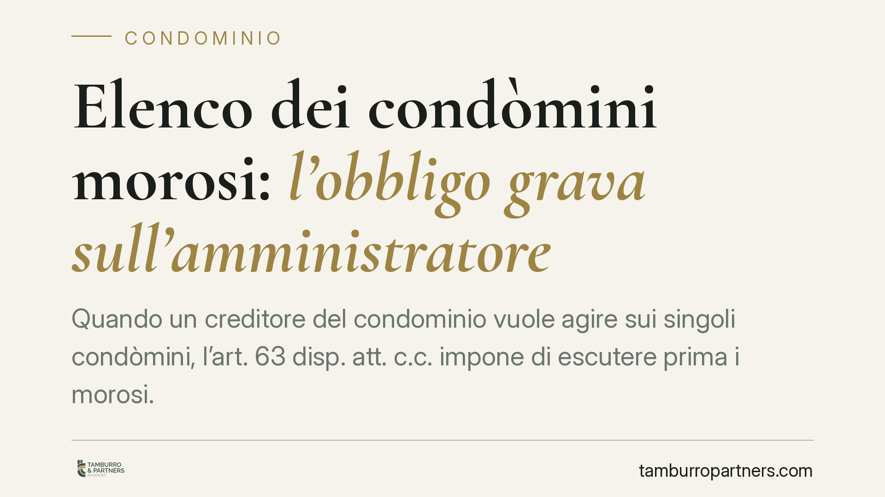
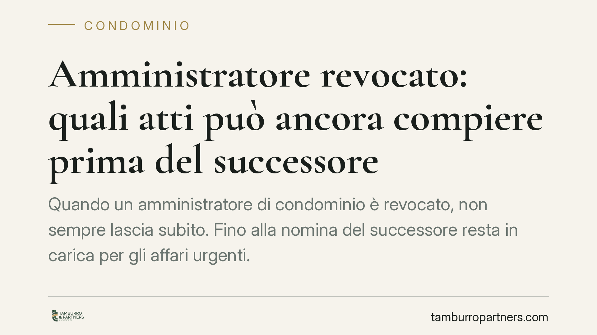
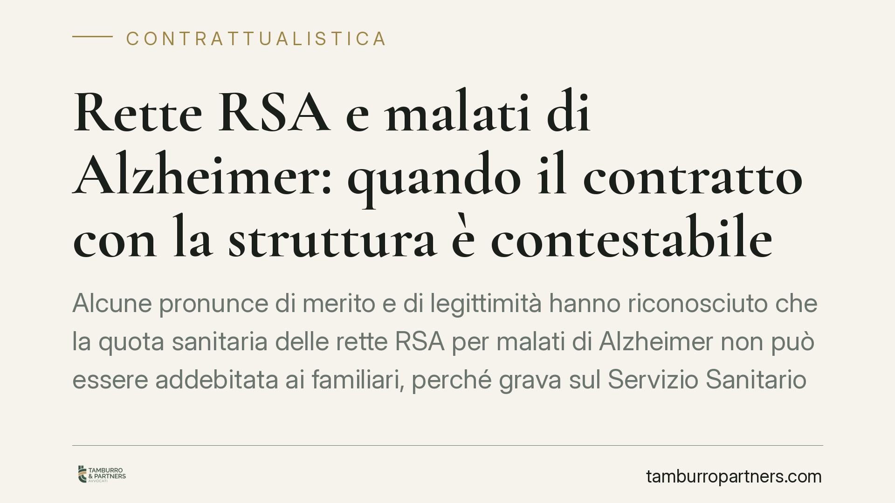
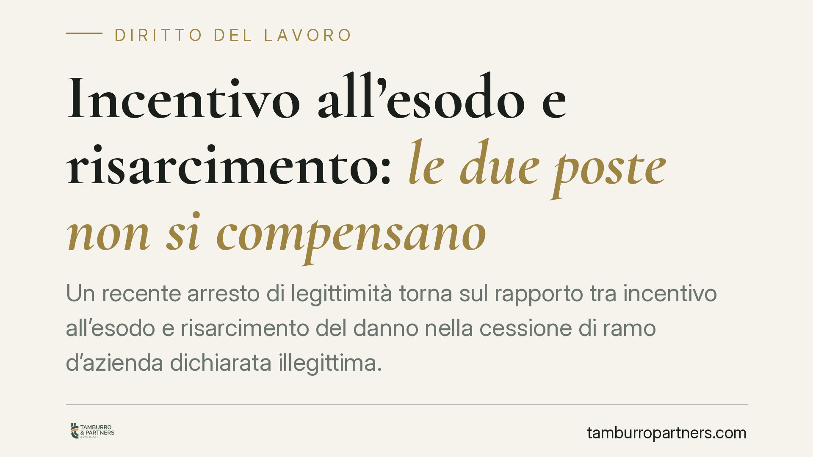
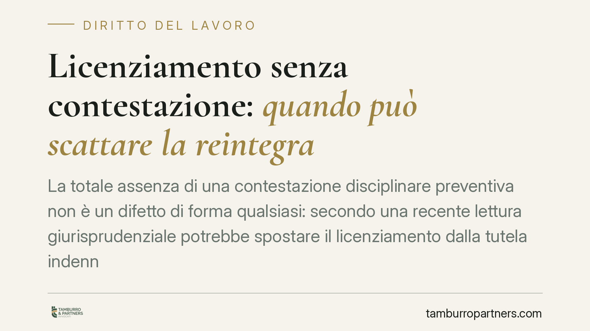
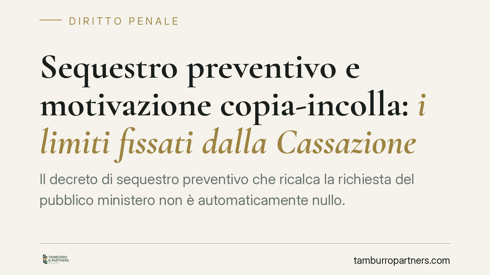
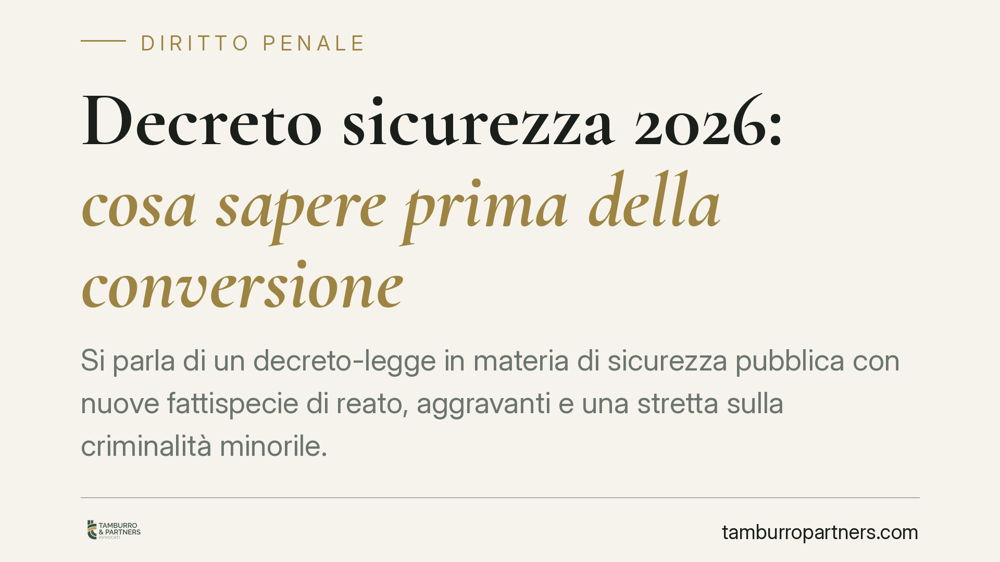
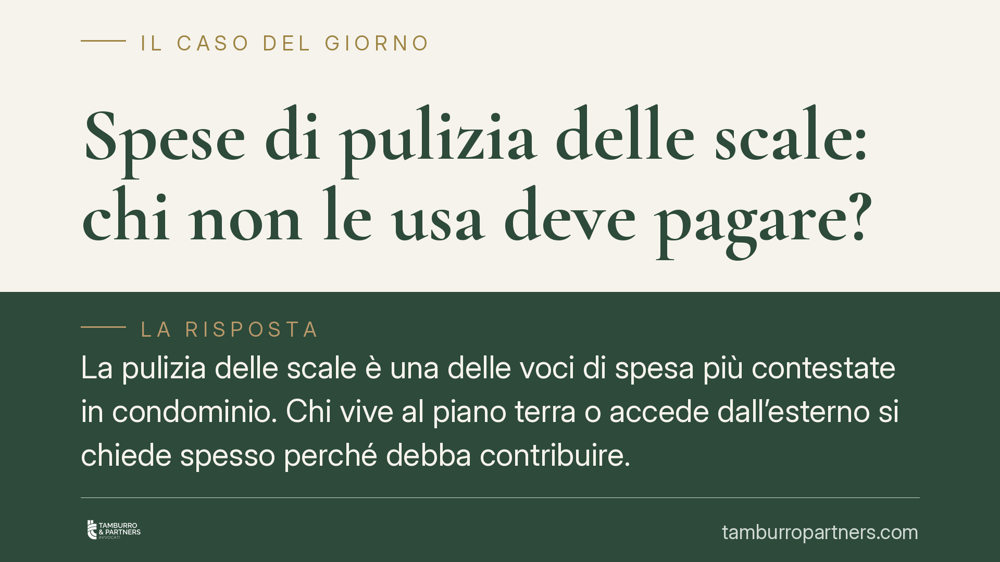
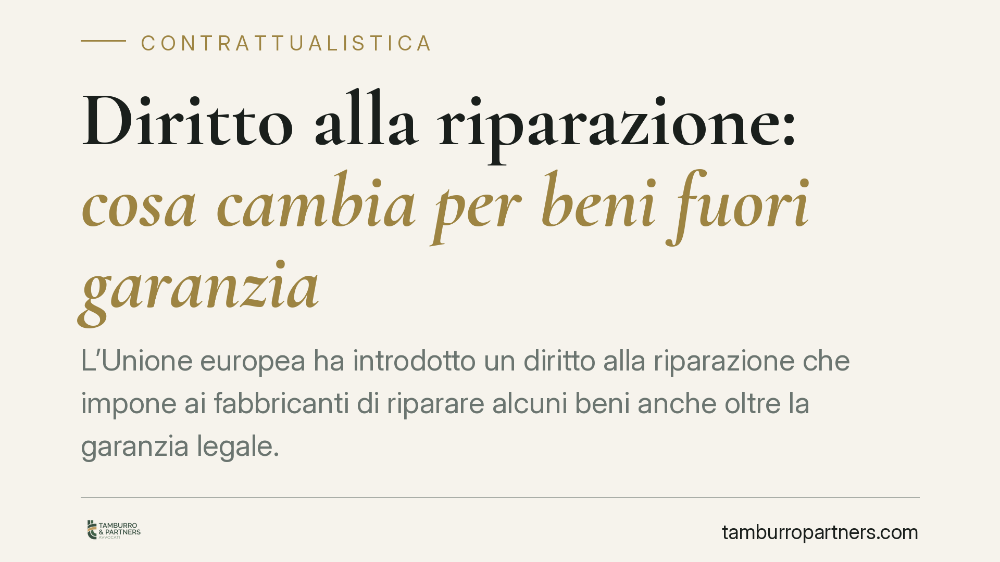
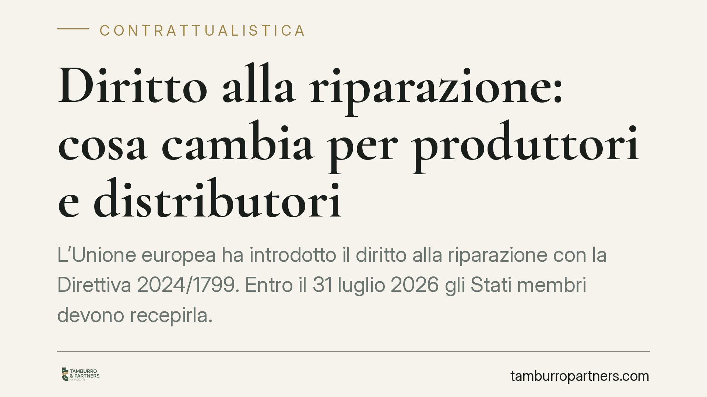

Supercondominio: chi può impugnare le delibere assembleari
Nel supercondominio la facoltà di impugnare le delibere assembleari resta in capo al singolo proprietario, non al rappresentante di palazzo né all'amministratore. Un principio che …

Decreto sicurezza 2026: cosa rischiano i genitori per le violenze dei figli minori ai cortei
Il decreto legge sicurezza n. 190 del 22 ottobre 2026 introduce sanzioni amministrative e obblighi risarcitori a carico dei genitori di minori coinvolti in violenze durante le mani…

Fondo speciale per i lavori straordinari in condominio: natura del vizio e impugnazione
L'art. 1135 c.c. impone all'assemblea di costituire un fondo speciale prima di deliberare lavori straordinari o innovazioni. La sua omissione incide sulla validità della delibera. …

Utili non distribuiti e contributi INPS del socio lavoratore di S.r.l.
Gli utili di una S.r.l. accantonati a riserva e non distribuiti incidono sui contributi previdenziali del socio lavoratore iscritto alla gestione commercianti o artigiani? La quest…

Imputabilità del minore e immaturità: la valutazione non è automatica
Un minore tra i quattordici e i diciotto anni non è punibile se, al momento del fatto, era immaturo. Ma l'immaturità non coincide con il vizio di mente, né dipende dalla sola età a…

Elenco dei condòmini morosi: l'obbligo grava sull'amministratore
Quando un creditore del condominio vuole agire sui singoli condòmini, l'art. 63 disp. att. c.c. impone di escutere prima i morosi. Ma chi deve fornirgli i nominativi? L'orientament…

Amministratore revocato: quali atti può ancora compiere prima del successore
Quando un amministratore di condominio è revocato, non sempre lascia subito. Fino alla nomina del successore resta in carica per gli affari urgenti. Ma può conferire mandato per un…

Rette RSA e malati di Alzheimer: quando il contratto con la struttura è contestabile
Alcune pronunce di merito e di legittimità hanno riconosciuto che la quota sanitaria delle rette RSA per malati di Alzheimer non può essere addebitata ai familiari, perché grava su…

Incentivo all'esodo e risarcimento: le due poste non si compensano
Un recente arresto di legittimità torna sul rapporto tra incentivo all'esodo e risarcimento del danno nella cessione di ramo d'azienda dichiarata illegittima. La somma incassata da…

Licenziamento senza contestazione: quando può scattare la reintegra
La totale assenza di una contestazione disciplinare preventiva non è un difetto di forma qualsiasi: secondo una recente lettura giurisprudenziale potrebbe spostare il licenziamento…

Sequestro preventivo e motivazione "copia-incolla": i limiti fissati dalla Cassazione
Il decreto di sequestro preventivo che ricalca la richiesta del pubblico ministero non è automaticamente nullo. Secondo una recente pronuncia della Cassazione penale, la coincidenz…

Decreto sicurezza 2026: cosa sapere prima della conversione
Si parla di un decreto-legge in materia di sicurezza pubblica con nuove fattispecie di reato, aggravanti e una stretta sulla criminalità minorile. Prima di trarre conclusioni opera…

Spese di pulizia delle scale: chi non le usa deve pagare?
La pulizia delle scale è una delle voci di spesa più contestate in condominio. Chi vive al piano terra o accede dall'esterno si chiede spesso perché debba contribuire. La questione…

Diritto alla riparazione: cosa cambia per beni fuori garanzia
L'Unione europea ha introdotto un diritto alla riparazione che impone ai fabbricanti di riparare alcuni beni anche oltre la garanzia legale. L'Italia deve recepire la direttiva UE …

Diritto alla riparazione: cosa cambia per produttori e distributori
L'Unione europea ha introdotto il diritto alla riparazione con la Direttiva 2024/1799. Entro il 31 luglio 2026 gli Stati membri devono recepirla. Per produttori, importatori e dist…

Licenziamento ritorsivo dopo il rifiuto di avance: cosa rischia il datore
Licenziare una lavoratrice che ha respinto le avance di un superiore espone il datore a conseguenze gravi: il licenziamento è nullo perché ritorsivo e discriminatorio. Ne derivano …

Iscrizione automatica al fondo pensione per i neoassunti: cosa cambia
Secondo le anticipazioni sulla previdenza complementare, dal 1° luglio 2026 i neoassunti del settore privato potrebbero essere iscritti automaticamente a un fondo pensione, con fac…

Patrocinio gratuito senza limiti di reddito per gli infortuni sul lavoro: cosa prevede il ddl
La Camera dei Deputati ha approvato un disegno di legge che estende il patrocinio a spese dello Stato, senza verifica del reddito, alle vittime di infortuni sul lavoro con inabilit…

Licenziamento illegittimo nelle piccole imprese: la tutela indennitaria sotto la soglia dimensionale
Il tema dell'indennizzo spettante ai lavoratori licenziati illegittimamente nelle imprese sotto la soglia dei quindici dipendenti torna periodicamente al centro del dibattito, anch…

Pagamenti errati in busta paga: quando l'azienda può recuperare le somme
L'azienda che versa per sbaglio somme non dovute in busta paga ha diritto a riaverle. Ma non sull'intero importo lordo: il recupero è limitato al netto che il lavoratore ha realmen…

Lista dei morosi: l'amministratore deve indicare il codice fiscale
Il Tribunale di Napoli (ord. n. 5161/2026) ha chiarito che l'amministratore, richiesto dal creditore del condominio, deve fornire l'elenco dei morosi completo di nome, codice fisca…

Multe condominiali: senza previsione nel regolamento la delibera è contestabile
Un recente orientamento giurisprudenziale torna sul potere sanzionatorio dell'assemblea condominiale: senza una regola scritta che vieti una condotta specifica, la multa deliberata…

LOAgri: il lavoro occasionale agricolo dal 2026
Il lavoro occasionale agricolo torna al centro dell'attenzione in vista del 2026. Lo strumento consente alle aziende agricole di impiegare lavoratori per prestazioni saltuarie entr…

Responsabilità dell'avvocato: la causa persa non basta a provare il danno
Perdere una causa non significa automaticamente aver diritto al risarcimento dal proprio avvocato. La Corte di Cassazione ribadisce un principio consolidato: il cliente deve dimost…

Mutuo cointestato tra ex: niente regresso se la casa è di uno solo
Chi firma un mutuo insieme all'ex partner, ma non è proprietario della casa, può rifiutarsi di rimborsare le rate pagate? Il Tribunale di Palermo risponde di sì: se la cointestazio…

Cancellazione di file aziendali dal PC: quando scatta il licenziamento per giusta causa
La cancellazione dei dati dal computer aziendale assegnato in uso al dipendente può costituire giusta causa di licenziamento. Una recente pronuncia di merito ribadisce che la condo…

Diritto alla riparazione: cosa cambierà per i consumatori
L'Unione europea ha introdotto un diritto alla riparazione destinato a incidere su garanzie, contratti e filiera dei ricambi. La Direttiva (UE) 2024/1799 va recepita entro il 31 lu…

Spese legali nelle cause contro l'INPS: quando non si compensano
Vincere una causa previdenziale contro l'INPS non garantisce automaticamente il rimborso delle spese legali. Il giudice può compensarle, ma solo in casi gravi ed eccezionali e con …

Quota 100 e cumulo redditi: la contestazione INPS e i limiti al recupero
L'INPS avvia recuperi nei confronti dei titolari di Quota 100 che hanno percepito redditi da lavoro in violazione del divieto di cumulo. Un orientamento giurisprudenziale, i cui es…

Recupero crediti in condominio: quando viola la privacy
Affiggere in bacheca o diffondere via chat i nomi dei condòmini morosi è una prassi diffusa quanto rischiosa. La divulgazione dei dati a una platea indeterminata viola la normativa…